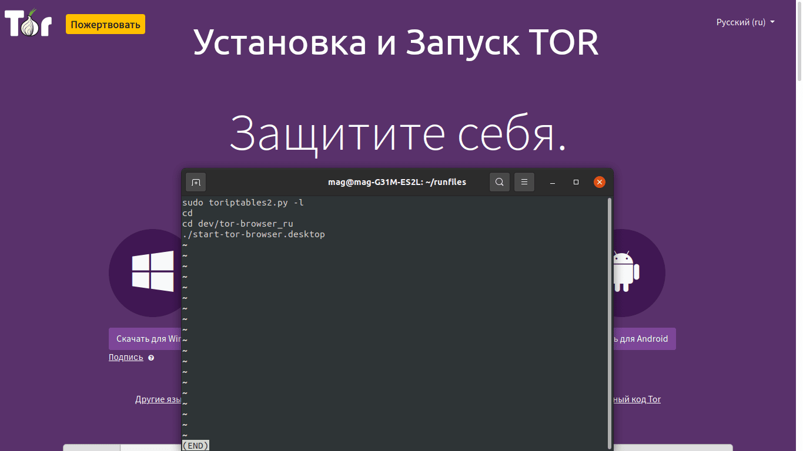

Устанавливаем и запускаем TOR на Ubuntu
Эта статья посвещена установке и запуску - TOR.
Так же установим необходимые инструменты и сделаем минимальные настройки.
Данная статья подайдет тем кто хочет просто запустить TOR и почувствовать себя закулисой.
В статье есть видео, в которым вcё показано на практике.
Приятного чтения и просмотра!
Так же установим необходимые инструменты и сделаем минимальные настройки.
Данная статья подайдет тем кто хочет просто запустить TOR и почувствовать себя закулисой.
Например, просмотр заблокированых сайтов роскомнадзором.
Все действия протестированы и проверены на дистрибутиве Ubuntu (15/XI/21).В статье есть видео, в которым вcё показано на практике.
Приятного чтения и просмотра!

Установка TOR
-
Cкачаем тор вот с этого сайта англ. версия, русс. версия:
-
Далее ищем куда скачался архив и распаковываем его в нужную нам папку, например у меня это 'Download/tor-browser-linux64-11.0_ru.tar.xz':
cd Download
-
Распокуем скаченный архив 'tor-browser-linux64-11.0_ru.tar.xz':
tar -xf tor-browser-linux64-11.0_ru.tar.xz
-
Перемещаем то что распоковалось в нужную нам директорию для хранения.
У меня TOR сохранен по следующему пути 'dev/tor-browser_ru':
mv tor-browser_ru ~/dev/tor-browser_ru
Установим анонимайзер
-
Скачиваем код с github:
git clone https://github.com/ruped24/toriptables2
-
Перемещаем файл 'toriptables2.py' в папку 'usr/local/bin'.
На деле выглядит вот так:
sudo mv toriptables2/toriptables2.py /usr/local/bin/toriptables2.py
"mv" - используется для перемещения каталогов/файлов
Скрипт для запуска
-
Сейчас мы напишем скрипт, который будет сначала запускать наш ананимайзер, а потом запускать TOR.
Открываем новый терминал и создаем папку 'run' и заходим в неё:
mkdir run && cd run
-
Создаем и открываем файл 'tor':
touch tor.sh && gedit tor.sh
-
В файле пишем следующее:
sudo toriptables2.py -l
cd
cd dev/tor-browser_ru
./start-tor-browser.desktop
sudo toriptables2.py -f- эта команда остановит ананимайзер. -
Теперь дадим нашему файлу права на исполнение:
chmod +x tor.sh
Заключение
-
В этой статье я рассказал как скачать и настроить тор по минимуму.
Как пользоваться ананимайзером.
И написал простой скрипт для запуска ананимайзера и tor.
Надеюсь, статья была полезной и у вас получилось найти ответы на свои вопросы.
НОВОСТИ
|